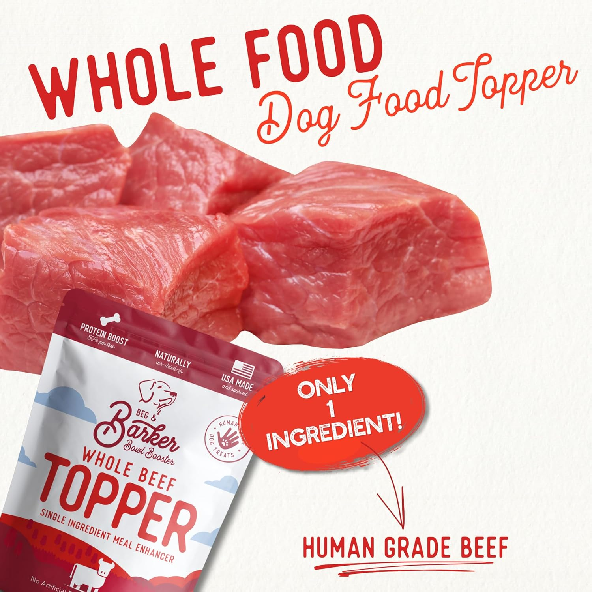
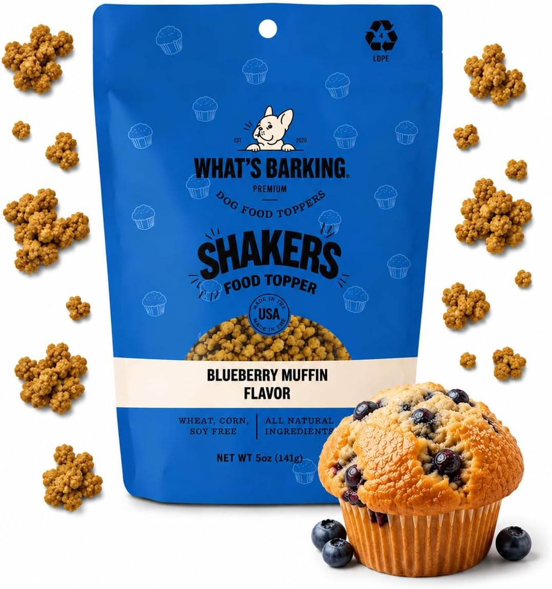
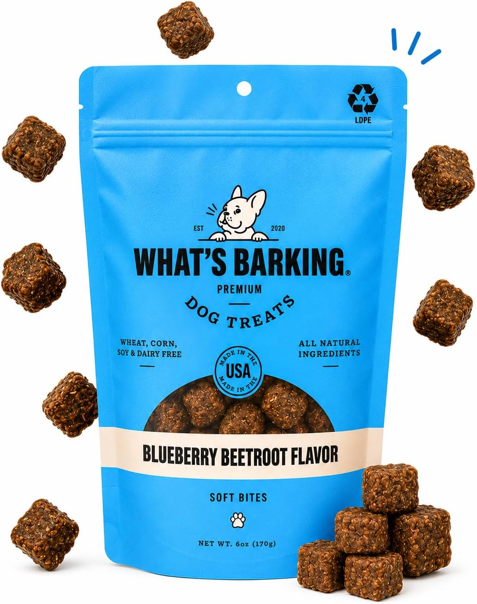

What Are Dog Meal Toppers?
They're exactly what they sound like — add-ons you sprinkle, scoop, or stir into your dog's regular food. A finishing touch. A little extra flavor, moisture, or nutrition to make that bowl of brown pellets a lot more interesting.
They're not a meal replacement. They're a supplement for a specific problem: a picky eater who walks away from the bowl, a senior who needs more joint support, or a dog who's just plain bored of eating the same thing twice a day for years.
Americans are spending more on pet food than ever. Here's what the numbers say:
Does Science Back It Up?
Short answer: yes, if you're using them for the right reason.
Nutritional gaps
Most kibble is complete and balanced — for a generic dog. But seniors, puppies, and dogs with health conditions often have specific gaps. According to the Pet Food Institute, more than half of U.S. dogs and cats are overweight or obese — a reminder that one-size-fits-all feeding doesn't work for every pet. A targeted topper can bridge specific gaps: omega-3s for skin and coat, joint nutrients for seniors, without switching foods entirely.
Hydration
Broths, gravies, wet toppers — these are the easiest way to get more water into a dog that doesn't drink enough. Chronic mild dehydration is a known risk factor for urinary tract issues and kidney problems, especially in breeds prone to them. A moisture-rich topper can help bridge the gap without forcing your dog to drink more from the bowl.
Top Picks for 2026
Every dog is different. We picked toppers for different needs. Scroll to find yours.

Beg & Barker Beef Dog Food Topper
Beg & Barker • 8 oz • Single ingredient • Made in USA
Best for: Sensitive stomachs & picky eaters→ Your dog sniffs kibble and walks away? This one's for you.
One ingredient: whole beef. Nothing else. If your dog has allergies, a finicky appetite, or you just want to know exactly what's in the bowl, this is as clean as it gets. Human-grade, USA-sourced. Dogs who turn up their nose at kibble go wild for this.

What's Barking Shakers Blueberry Muffin Dog Meal Topper
What's Barking • Resealable bag • Crunchy crumbles • Made in USA
Best for: Kibble fatigue & texture seekers→ Your dog eats but looks bored mid-bowl? Try this.
Crunchy crumbles that smell like a fresh blueberry muffin — minus the sugar and junk. Dogs bored of their food perk right up. The texture adds that satisfying crunch that plain kibble just doesn't deliver. Natural ingredients, resealable bag.

What's Barking Soft Bites — Blueberry Beetroot
What's Barking • Soft chewy bites • Made in USA
Best for: Training & topping in one→ Need something that works as a topper AND a training treat? This does both.
Soft, chewy, and easy to break apart. Crumble over kibble as a topper, or use as training treats on walks. Blueberry-beetroot adds antioxidants without artificial coloring. Bite-size means easy portion control — unlike big crumbly toppers you can't measure.

Turkey Bone Broth (Dehydrated)
Nature's Logic • 2 lb • Dehydrated • Just add water • Made in USA
Best for: Sensitive stomachs & joint support→ Your dog could use a hydration boost and joint support? This is a two-in-one.
Natural dehydrated turkey bone broth packed with collagen and glucosamine. Mix with warm water and pour over kibble for an instant gravy upgrade — no artificial anything, just real nutrition your dog absorbs easily.

Pork Bone Broth (Dehydrated, 12oz)
Nature's Logic • 12 oz • Dehydrated • Just add water • Made in USA
Best for: Trying bone broth for the first time→ Not sure if your dog will like bone broth? Start with this small bag.
100% dehydrated pork bone broth in a trial-size 12oz bag. Perfect for seeing if your dog takes to broth before committing to a larger size — same clean ingredient list, just smaller.

Beef Bone Broth (Dehydrated, 2lb)
Nature's Logic • 2 lb • Dehydrated • High collagen • Made in USA
Best for: Picky eaters & kibble fatigue→ Your dog won't touch plain kibble? A scoop of this changes everything.
100% dehydrated beef bone broth — mix with warm water and you've got a savory, collagen-rich gravy that turns even the most boring kibble into a feast. 2lb bag lasts a long time for most dogs.

Bone Broth Powder (Dehydrated)
Nature's Logic • 10 oz • Powder form • No mixing needed • Made in USA
Best for: Convenience seekers — no refrigeration→ Too busy to mix and fridge bone broth? This powder is sprinkle-and-go.
Dehydrated bone broth in powder form — just sprinkle on top of kibble. No water, no refrigeration, no fuss. Gets the same collagen and joint support into your dog's bowl in two seconds flat.

Chicken Bone Broth (Dehydrated, 2lb)
Nature's Logic • 2 lb • Dehydrated • Most popular flavor • Made in USA
Best for: Most dogs — the crowd-pleaser flavor→ Chicken is the flavor dogs rarely turn down. This 2lb bag is your safe bet.
100% dehydrated chicken bone broth — the one flavor that works for nearly every dog. USA-sourced chicken, rich in natural glucosamine and chondroitin. 2lb bag gives you months of daily meal upgrades.

Pork Bone Broth (Dehydrated, 2lb)
Nature's Logic • 2 lb • Dehydrated • Rotation protein • Made in USA
Best for: Protein rotation & variety seekers→ Your dog's been on chicken or beef broth for a while? Switch it up with pork.
100% dehydrated pork bone broth — a fresh protein option for dogs who've been on chicken or beef too long. 2lb bag, same clean single-ingredient formula. Natural collagen for joints and skin.

Giant Beef Trachea Chew
Nature's Logic • Giant size • Single ingredient • Long-lasting • Made in USA
Best for: Large breed dogs & power chewers→ Your big dog destroys regular chews in minutes? This giant trachea holds up.
Giant beef trachea — a single-ingredient chew that lasts. Packed with natural glucosamine and chondroitin for joint health, plus the chewing action scrubs teeth clean. Nothing added, no shortcuts.

Beef Jerky Canine Treat (1lb)
Nature's Logic • 1 lb bag • Single ingredient • High protein • Made in USA
Best for: High-value training rewards→ Your dog needs a reward that actually gets their attention? Beef jerky does it.
100% USA beef — single ingredient jerky treats. High protein, low carb, no irradiation or chemical preservation. Dogs go nuts for these, making them perfect for training, recall practice, or just being good.

Beef Liver Treats (1lb)
Nature's Logic • 1 lb bag • Freeze-dried • Iron-rich • Made in USA
Best for: Training — the treat dogs can't resist→ Need the highest-value treat in your arsenal? Liver beats everything.
100% freeze-dried beef liver — the treat dogs will do ANYTHING for. Single ingredient, packed with iron and vitamin A. Break into smaller pieces for training sessions. No chemicals, no irradiation, no BS.

Beef Lung Treats (Dog & Cat)
Nature's Logic • 1 lb bag • Single ingredient • Airy texture • Made in USA
Best for: Dental-friendly chew — gentle on teeth→ Your dog needs a chew but has sensitive teeth? Lung is light and airy.
100% USDA Midwest beef lung — single ingredient, carnivore-appropriate. The airy, porous texture makes it easier on teeth than dense chews while still promoting dental hygiene. Not irradiated — natural preservation only.

Natural Peanut Butter Spread Treat
Nature's Logic • 12 oz jar • Spreadable • No xylitol • Made in USA
Best for: Kong stuffing & lick mats→ Your dog needs to stay busy? Peanut butter in a Kong buys you 30 minutes of peace.
100% natural peanut butter made specifically for dogs — no xylitol, no added sugar, no hydrogenated oils. Spread it on a lick mat or stuff a Kong, freeze it, and watch your dog work for their reward.

Natural Pumpkin Puree (Dogs & Cats)
Nature's Logic • 15 oz can • Single ingredient • Fiber-rich • Made in USA
Best for: Digestive health & sensitive tummies→ Your dog has loose stools or digestive issues? Pumpkin is the gentle fix.
100% natural pumpkin puree — rich in fiber, helps firm up loose stools and supports overall digestion. Works for both dogs and cats. No additives, preservatives, or fillers — just real pumpkin in a can.

Rabbit Meal Feast 25lb + Beef Bone Broth
Nature's Logic • 25 lb kibble + Bone Broth • Novel protein • Allergy-friendly • Made in USA
Best for: Allergy-prone dogs — novel rabbit protein→ Your dog reacts to chicken, beef, and everything in between? Rabbit is the reset button.
Complete rabbit meal kibble (25lb) bundled with a beef bone broth topper. Rabbit is a novel protein ideal for dogs with food allergies — paired with bone broth for natural glucosamine and joint support.

Beef Meal Feast 25lb + Beef Lung Treat
Nature's Logic • 25 lb kibble + Lung Chew • High protein • Dental bonus • Made in USA
Best for: Active dogs — high protein fuel + chew→ Your active dog burns through calories? Beef formula with a bonus chew to keep them busy.
Beef meal kibble (25lb) with a beef lung chew included. 87% protein from beef sources, all-natural recipe. The lung chew doubles as a dental health tool — clean teeth while they snack.

Duck & Salmon Feast 25lb + Beef Lung Treat
Nature's Logic • 25 lb kibble + Lung Chew • Omega-rich • Skin & coat • Made in USA
Best for: Skin & coat — omega fatty acids→ Your dog has dry, flaky skin or a dull coat? Duck and salmon bring the omega power.
Duck & salmon meal kibble (25lb) with a beef lung chew. Omega-3 and omega-6 from fish for a glossy coat and healthy skin. 87% protein from meat sources, zero junk fillers.

Chicken Meal Feast 25lb + Beef Lung Treat
Nature's Logic • 25 lb kibble + Lung Chew • Everyday formula • Probiotic boost • Made in USA
Best for: Everyday feeding — all-in-one bundle→ You want one purchase that covers food AND a treat for the month? Here you go.
Chicken meal kibble (25lb) with a beef lung chew included — the grab-and-go bundle for busy homes. Probiotics and enzymes for digestion, bone broth for joints. One box, everything you need.

Sardine Meal Feast 25lb + Extra Meaty Shin Bone
Nature's Logic • 25 lb kibble + Shin Bone • Omega-3 powerhouse • Brain health • Made in USA
Best for: Brain & coat health — omega-3 from sardines→ Your dog needs a cognitive boost and a shiny coat? Sardines deliver both.
Sardine meal kibble (25lb) with a beef shin bone. Sardines are an omega-3 powerhouse for brain function and coat shine. The shin bone adds natural dental care through recreational chewing.

Rabbit Meal Feast 25lb + Beef Lung Treat
Nature's Logic • 25 lb kibble + Lung Chew • Severe allergy formula • Novel protein • Made in USA
Best for: Severe food allergies — clean novel protein→ Your dog has tried everything and still reacts? Rabbit is the ultimate reset protein.
Rabbit kibble (25lb) with a beef lung chew — the go-to for dogs with severe food sensitivities. Rabbit is one of the least allergenic proteins for dogs. Zero common allergens — no peas, potatoes, corn, wheat, soy.

Turkey Meal Feast 25lb + Beef Lung Treat
Nature's Logic • 25 lb kibble + Lung Chew • Gentler poultry • Alternative to chicken • Made in USA
Best for: Chicken-sensitive dogs — turkey alternative→ Your dog reacts to chicken but you want to stay with poultry? Turkey is gentler.
Turkey meal kibble (25lb) with a beef lung chew. Turkey is often better tolerated than chicken for sensitive dogs. 87% protein from turkey, bone broth for mobility, all-natural recipe.

Lamb Meal Feast 25lb + Beef Tendon Chew
Nature's Logic • 25 lb kibble + Tendon Chew • Red meat formula • Active dogs • Made in USA
Best for: Active large breeds — hearty lamb formula→ Your big, active dog needs serious fuel? Lamb and a tendon chew deliver.
Lamb meal kibble (25lb) with a beef tendon chew. Hearty red meat protein for dogs that work hard and play harder. The tendon chew is a long-lasting natural dental treat. No junk fillers.

Pork Meal Feast 25lb + Beef Hind Shank Bone
Nature's Logic • 25 lb kibble + Shank Bone • Unique protein • Natural dental care • Made in USA
Best for: Protein rotation — pork variety + dental bone→ You're rotating proteins for variety? Pork is the one most rotation plans miss.
Pork meal kibble (25lb) with a beef hind shank bone. Pork is an underused protein in dog food rotations — a fresh option that keeps meals interesting. The shank bone provides natural dental cleaning through chewing.